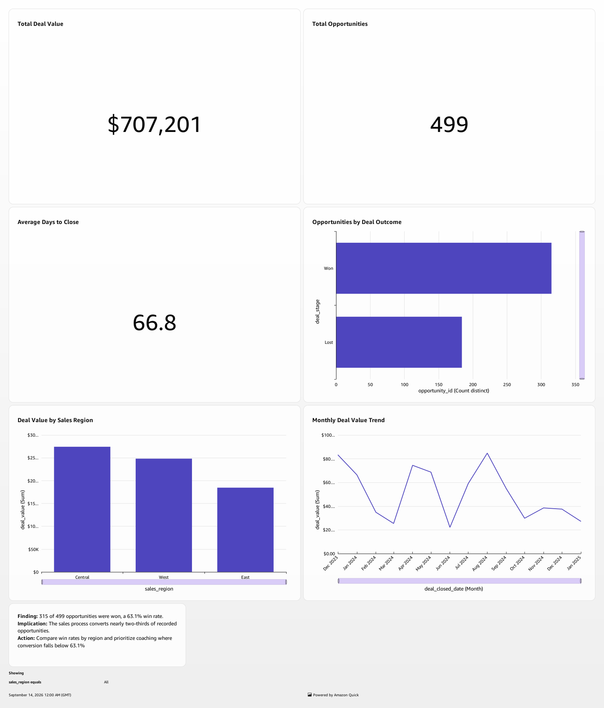

The business decision
How can leadership examine marketing performance, sales outcomes, and customer support through a consistent analytical view?
The NovaTech project used course-provided datasets. Its core challenge was preserving valid business totals while enabling analysis across functions.
My contribution
I prepared and validated the datasets, designed the analytical model and three dashboard sheets, configured calculated fields, filters, navigation actions, and the natural-language Topic, then documented findings and limitations.
The public deliverables are dashboard exports, screenshots, and a project report. They document a completed program project rather than a live production system.
The analytical approach
The CRM dataset served as the anchor. Marketing and support were left-joined on account_id. Multiple records per account created many-to-many fan-out, expanding the combined dataset to 63,420 rows.
| Source | Records | Use |
|---|---|---|
| CRM deals | 499 | Authoritative sales KPIs |
| Marketing campaigns | 2,240 | Authoritative campaign KPIs |
| Support tickets | 3,000 | Authoritative support KPIs |
| Unified dataset | 63,420 | Matched-account relationships and distinct identifiers |
Use source datasets for domain totals. Restrict the combined dataset to matched-account relationships and distinct-ID analysis. Distinct counts still require care when segment memberships overlap.
Topic enrichment added definitions, synonyms, named filters, and instructions routing single-domain questions to authoritative sources. The report records corrections to dataset selection, response-rate interpretation, and support coverage.
Findings and business relevance
- Marketing: Attributed revenue was below recorded spend across the six campaigns. The implication was to validate attribution and spend allocation before increasing budgets.
- Sales: The source contained 315 Won and 184 Lost opportunities, a 63.1% win rate within the supplied data. Average days to close differed by region, suggesting a process investigation.
- Support: Critical Enterprise tickets had longer average resolution time than Basic tickets. Ticket complexity, escalation paths, and staffing require investigation before attributing the difference to a cause.
These observations demonstrate analytical interpretation. They do not establish commercial performance for a real client or measured improvement caused by the dashboard.
Deliverables and evidence
The three-sheet dashboard covers the marketing funnel, sales pipeline, and customer health. The report documents preparation checks, model controls, Topic tests, findings, and limitations.
- Three-sheet dashboard PDFExported marketing, sales, and customer-health views.
- Project reportSource counts, model controls, Topic tests, findings, and limits.
- Complete project repositoryOriginal source, attribution, and supporting project documentation.


Source review: November 20, 2026. Repository artifacts establish the published deliverables; they do not establish downstream business impact.
Limits and next validation
- The CRM-anchored join omits unmatched account IDs and duplicates records through fan-out.
- Distinct counts can overlap across tiers; joined data is unsuitable for naive additive totals.
- Marketing ROI depends on supplied spend and attribution definitions.
- The data is observational and course-provided. No causal inference, production adoption, or realized financial result is established.
A production implementation would need agreed KPI definitions, reconciliation with business owners, a model designed for each dataset’s grain, and ongoing freshness and access controls.